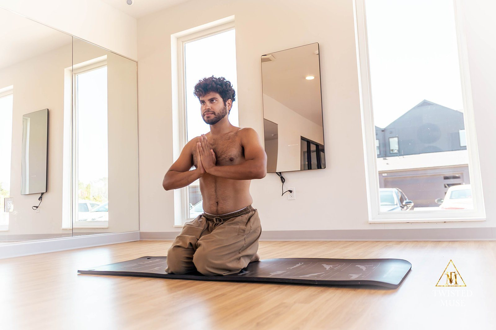
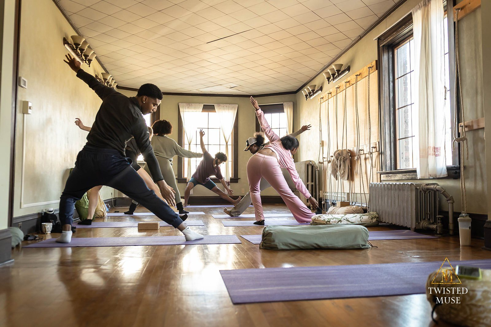

Begin where you are.
Public practice is the most open doorway into Senses Yoga School. You do not need to arrive flexible, knowledgeable, spiritual, or certain. You arrive as you are and begin building a relationship with body, breath, attention, and community.
See Current Practice
Take what you receive and leave what you don't need.
Heroic Yogi · Day 119 · Yoga Begins With Exploration
Different doors into the same relationship.
Yoga For Life
Our primary community practice model: yoga, breathwork, meditation, reflection, and accessible embodied education offered through community and public settings.
Heroic Breathwork
Breath-centered practice for self-awareness, resilience, reflection, and embodied inquiry.
MOGA · Nāda & Sound
Sound, mantra, listening, musical practice, and contemplative arts as pathways of attention and relationship.
Community & Outdoor Practice
Seasonal practice in gardens, parks, recreation programs, partner sites, and other environments where community already gathers.

Practice becomes relationship through repetition.
Heroic Yogi · Living Journal
One class can change an afternoon. A sustained practice can change the way we meet ourselves. The school is interested in the second question.
Face the challenge. Leap toward the highest purpose.
Adapted from Hero 365 · Day 9 · Hanuman's Leap
Follow the complete Heroic Yogi arc →
Begin with the breath. Begin again.
Senses Yoga Patreon · Prāṇa Circle
Breath gives practice an interior dimension. It asks us to notice before we react and to experience attention as something trainable.
The journal travels with you.
The Senses Yoga Patreon holds class archives, guided practices, breathwork, meditation, community updates, and the continuing Heroic Yogi writing.
Free membership keeps practice available between in-person gatherings. Paid support remains voluntary and helps sustain accessible community education.
Practice beyond the calendar
Return to the archive when you need another doorway into practice.
Read Heroic Yogi
What kind of relationship does this practice teach me to build?
Heroic Yogi · Living Journal
The practice eventually encounters another person, a neighborhood, a garden, a responsibility. That is where Senses begins moving from practice into service.
Continue into service →Come practice with us.
You do not need to understand the whole school before participating. Choose a current gathering and let experience be the first lesson.
Open the Public Calendar